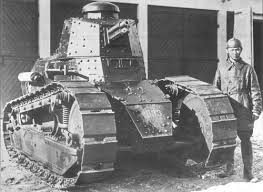

The Renault FT was a revolutionary French light tank, introduced in 1918 and widely considered the first modern tank due to its fully rotating turret and rear engine layout. Designed to overcome the limitations of earlier French tanks like the Schneider CA1 and Saint-Chamond, the FT prioritized mobility, versatility, and ease of production. The FT had a major impact on armored warfare, influencing tank design worldwide for decades and establishing the blueprint for nearly all modern tanks.

- Characteristics:
- Type: Light tank
- Weight: 6.5 tons
- Crew: 2
- Armament: 37 mm Puteaux SA18 cannon/ 8mm Hotchkiss machine gun
- Speed: 7 km/h